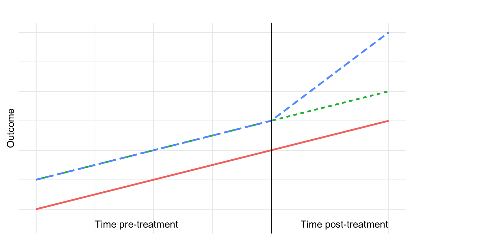
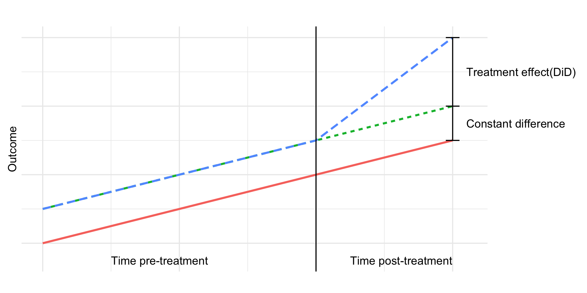
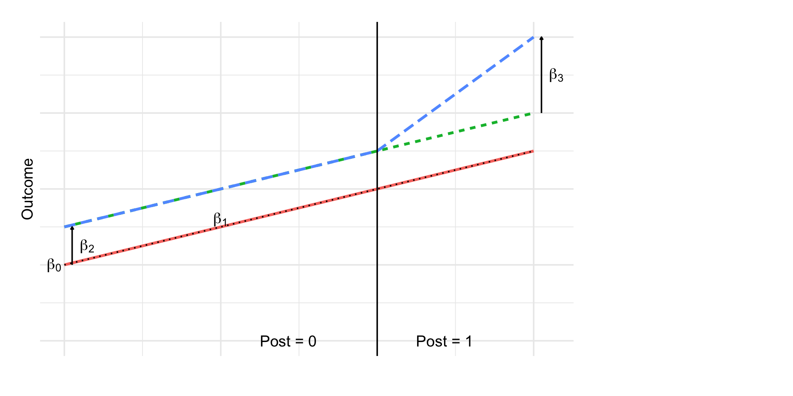

flowchart LR H[AI Training] --> E[Higher wage] F[Observed Confounders] --> H F --> E U --> E U --> H classDef adj stroke-width:3,fill:#fff; classDef exp fill:#cfc; classDef con fill:#ddd,stroke:#333; classDef out fill:#ccf; class F con; class H exp; class E out;
Week 7: Causal Approaches with Regression
Jesper Lindmarker
How difficult was last week?
📍 The Course So Far
Week 1 – Regression basics
One X → one continuous Y.
Learned the core regression framework.Week 2-3 – Adding complexity to X
Multiple predictors, categorical variables, interactions.
Still: continuous Y.Week 4 – Thinking before modelling
Confounding, mediators, colliders.
Used DAGs to guide causal reasoning.Week 5 – A new type of Y
Binary outcomes (0/1).
Linear Probability Model & Logistic regression.Week 6 – Choice among many options
Multinomial and conditional logit.
Modeling decisions in choice sets.
🧭 What to do in Week 7?
Until now: regression as a tool for association
👉 But many research questions ask for causal effects, not associations.- Is is actually hours of study causing higher exam scores?
- Does teenage mental health cause violent behavior in adulthood?
- Or, are these (meaningful) associations driven by confounders?

Today
- 🔁 Repetition: What do we mean by causal? And why is it so tricky?
- 🎲 Understand why randomization is so powerful
- 🏆 Why RCTs are the gold standard for causal inference
- 🖖 Learn one of the quasi-experimental methods: Difference-in-Differences
- 👯 Matching as a way to improve comparability (not causal but related)
Let’s pose a causal question 🎓💻
- Question: Does participation in an AI/LLM training have a causal effect on employment and wages?
- Treatment (T): Enrolled in AI/LLM job training
- Control: Did not enroll in AI/LLM job training
- Outcome (Y): Employment status / wage after two years
Causality: Potential Outcomes Framework 🎯
- Y is our outcome: Wage after 2 years.
- Each person has two potential outcomes:
- \(Y(1)\) if trained in AI 🤖
- \(Y(0)\) if not trained 🙅
- Causal effect = \(Y(1) - Y(0)\)
- The fundamental problem: we never see both Y(1) and Y(0) for the same person 👀
🎯 The Core Identification Idea
- For the true Causal effect (\(Y(1) - Y(0)\)) we have to imagine two parallel universes 🪐🪐:
- In Universe 1, Alice gets training
- In Universe 2, Alice does not get training
- Everything else is the same in both universes!
- But we only observe one universe! 🪐
- Proposed solution: Compare two units that mimic the parallel universes 💫
In other words:
Compare a treatment group and a control group that differ only in treatment.
What’s the problem with a regression on observational data?
- If we visit a company where some took a LLM training and some didn’t (i.e. a dummy)
- What is the problem with a regression like this:
wage_t1 ~ LLM_training?- Our inferential nemesis: confounding.
- The two groups might differ in: motivation, prior experience, skill level, career ambition, etc.
- Our inferential nemesis: confounding.
- Because the treated and untreated groups are not comparable, it is not the causal effect.
Consider who we are comparing!
Another way to talk about confounding:
- Confounding means those we compare differ in important ways other than treatment 🧩
Treated (T = 1):
🧑💻🧑💻🧑💻🧑💻
(more motivated, more skilled)
Control (T = 0):
🧍🧍🧍🧍
(less motivated, less skilled)
Confounding in observational comparison 🧩
Imagine this is what we observe 2 years after training took place.
| Group | n | Mean Wage | Mean Coding Experience |
|---|---|---|---|
| Trained (T = 1) | 50 | $60,000 | 5 years |
| Untrained (T = 0) | 50 | $45,000 | 1 year |
- Raw wage difference: $15k 💰
- But! Trained workers had more experience (5 vs 1 year)
- The observed gap in wage could be partly (or entirely) due to prior skills, not the AI training
- This is not a valid counterfactual comparison to make causal inference.
But can’t we control for all confounders? 🔗
What controlling does is to force the regression to compare units that share similar values on those variables.
- We need to block all backdoor paths to estimate the causal effect.
- But can we ever know that we blocked ALL backdoors? 🤔
The Experimental Ideal 🎲
The best comparison 💫
- There is one method that removes all confounding at once 🥇
- If we randomize AI training, the two groups become comparable on everything except the treatment.
flowchart LR H[AI Training] --> E[Higher wage] Z[Random treatment] --> H F[Confounders] --> E classDef adj stroke-width:3,fill:#fff; classDef exp fill:#cfc; classDef con fill:#ddd,stroke:#333; classDef out fill:#ccf; class F con; class H exp; class E out; class Z adj;
- Randomization breaks the link between confounders and treatment, so the back-door path disappears.
- If did right, AI training will not be correlated with any confounders!
wage_t1 ~ random_assignment➝ clean estimate of the training effect 🎯
Balance after randomization ⚖️
Imagine a new study where we randomize training and observe 2 years later
| Group | Mean Wage | Mean Coding Experience |
|---|---|---|
| Assigned Training | $50,000 | 3.0 years |
| Assigned Control | $45,000 | 3.1 years |
- Prior coding experience are (almost) similar across groups
- Everything else(!!!), even unobserved, should be balanced. Magic of randomization ✨
- Difference: $5k ⇒ now credible as causal because the groups approximate valid counterfactuals for comparison
Randomized Control Trial (RCT) 🏆
- gold standard in causal inference
- Uses the power of randomization 🔋🎲
- Randomly assign some applicants to the treatment, others to control
- Balances groups on all(?) characteristics ⚖️
- Any differences in outcome = causal effect of treatment

Why Not Always RCTs? 🚧
- ⚖️ Ethical barriers: who gets denied training?
- 💸 Practical limits: cost, time, logistics
- 🌍 External validity: one region’s program may not generalize
- 🏛️ Political and institutional barriers
Natural Experiments 🌍
🌍 If We Cannot Randomize…
We look for as-if random variation:
- Policy changes rolled out in some places but not others
- Natural disasters affecting some regions
- Sudden eligibility rules based on birthdates or income
- These situations are often called quasi-experiments or natural experiments
- The shock isn’t correlated with any other factor that affects the outcome.
- The shock provides exogenous variation:
- Exogenous = unrelated to outcome, but changes treatment
Example
- Eligibility rule based on an income cutoff (e.g., only < $3,000/month qualify)
- Treatment: access to a subsidy or program
- Key point: people earning 2,950 and 3,050 should not be meaningfully different in ability, motivation, or future outcomes.
- We can see those as as-if randomly assigned to treatment vs. control
🧭 One Principle, Many Designs
Natural experiments provides exogenous variation:
- Exogenous = unrelated to outcome, but changes treatment
Difference-in-Differences
Treatment timing is as-if random across groups.Regression Discontinuity
Units near a cutoff are as-if randomly assigned.Instrumental Variables
An external factor moves treatment but has no effect on outcomes.
When treatment assignment is exogenous (by design or by nature), we can identify a causal effect.
Difference-in-Differences (DiD) 🖖
Our Example 🏙️
- AI/LLM training program rolls out over time:
- City A gets training in 2023
- City B gets training in 2026
- City A gets training in 2023
- Idea: Use City B as a control group until it also gets training
- Causal effect:
- Difference in mean wage (t0-t1) in City A - Difference in mean wage (t0-t1) in City B
- The difference-in-differences (DiD)
2×2 DiD Table 🧮
| Before Training | After Training | |
|---|---|---|
| City B (Control, gets training later) | \(\bar Y_{B0}\) | \(\bar Y_{B1}\) |
| City A (Treated in 2023) | \(\bar Y_{A0}\) | \(\bar Y_{A1}\) |
DiD estimand:
\[ \tau = (\bar Y_{A1} - \bar Y_{A0}) - (\bar Y_{B1} - \bar Y_{B0}) \]
DiD 📊

DiD 📊

Regression Version ✏️
\[ Y_{it} = \beta_0 + \beta_1 \, Post_t + \beta_2 \, Treat_i + \beta_3 (Post_t \times Treat_i) + \varepsilon_{it} \]
Where:
- \(Post_t\): indicator for time after treatment
- \(Treat_i\): indicator for treated group
- Interaction term: \(Post_t × Treat_i\)
- \(\beta_0\): control baseline
- \(\beta_1\): control time trend
- \(\beta_2\): baseline difference
- \(\beta_3\): extra change in treated → DiD effect
Regression Version ✏️

Core Assumption = Parallel Trends 📉
For DiD to identify a causal effect:
- Outcomes in City A and City B would have followed parallel trends if no training happened
- What we look for:
- Parallel trends before treatment 📉
- Different levels okay
- Clear “bend” in trend for treated group right after training 🚀
- Can’t be tested 🤦♀️
- Parallel trends before treatment 📉
DiD: Things to Watch Out For 👀
Other shocks at the same time?
- New labor laws? tech sector boom? migration changes?
- Must document and test.
- New labor laws? tech sector boom? migration changes?
Anticipation effects
Did workers change behavior before the rollout because they expected it?
Did different kinds of workers move into or out of treated vs. control cities because of the training rollout?
Spillovers?
- Did nearby cities feel the effect (e.g. commuting, labor market linkages)?
🎮 Pokémon GO & Physical Activity
Study: Howe et al. (2016), BMJ (https://doi.org/10.1136/bmj.i6270)
Question: Did Pokémon GO increase physical activity among young adults?
Treatment: People who started playing Pokémon GO
Control: Similar individuals who did not start playing Pokémon GO
Outcome: Daily step count (from smartphones / wearables)
Design: Difference-in-Differences
📱 Data & Measurement
- Participants recruited on MTurk, ages 18–35, all in the US
- Everyone used an iPhone 6 (standardized step tracking)
- Players uploaded:
- Screenshot showing Pokémon GO installation date
- Screenshots of their daily step counts
- Screenshot showing Pokémon GO installation date
- Time window:
- 4 weeks before installation
- 6 weeks after installation
- 4 weeks before installation
- Non-players: steps before/after the median player installation date
- Analysis: DiD-style regression adjusting for
- Time-invariant differences between players and non-players
- Week-to-week fluctuations affecting everyone
- Time-invariant differences between players and non-players
📊 Results

🎯 What We’ve Learned So Far
We now understand why randomization works:
it breaks the link between confounders and treatment,
giving us clean, unbiased comparisons.And we’ve seen that DiD works when treatment timing is
as good as random with respect to outcome trends.
The key lesson:
Exogenous variation, whether created by us (RCTs) or found in the world (DiD), gives us causal leverage.
🧭 Other approaches
This idea shows up again and again in causal inference:
- ✂️ Regression Discontinuity:
- Treatment jumps at a cutoff (age, score, date)
- People just above and below the cutoff are as-if randomly assigned
- Treatment jumps at a cutoff (age, score, date)
- 🎺 Instrumental Variables:
- Find a variable that changes treatment for reasons unrelated to the outcome
- For example:
- Distance to training center affecting enrollment but not wages directly 🏃♀️
- Cigarette taxes affecting smoking but not lung cancer directly 🚬
✨ The theme
Across DiD, RD, and IV the strategy is:
Find a source of variation in treatment that behaves like randomization.
Next: Matching
A method to improve comparability when we cannot find such natural experiments—
but not a causal identification strategy by itself.
Matching 🤝
Matching Methods 🤝
- First, not a causal identification strategy by itself
- More like an enhancement to regression
- If we can’t randomize and don’t have a natural experiment, can we at least find two balanced groups?
- In our case: Compare trained workers with “similar” untrained workers
- Goal: emulate randomization
Matching ducks 🦆

Matching Example 🧮
| Pair | AI/LLM Trainee Wage | Prior Coding Exp | Matched Non-trainee Wage | Prior Coding Exp |
|---|---|---|---|---|
| 1 | $62,000 | 5 years | $56,000 | 5 years |
| 2 | $59,000 | 3.8 years | $53,000 | 4 years |
| 3 | $61,000 | 6.1 years | $55,000 | 6.3 years |
| … | … | … | … | … |
- After matching on prior coding experience, the average wage difference across pairs is about $6k 💰
- Smaller than the raw $15k gap, because we’ve “controlled” for background skills by design through matching
Advantages of Matching 🎯
- Design before analysis
- Create a comparison group without looking at outcomes
- Makes causal logic more transparent
- Create a comparison group without looking at outcomes
- Checks overlap
- Reveals when treated and control groups don’t really overlap
- Avoids hidden extrapolation
- Reveals when treated and control groups don’t really overlap
- Trims the tails
- Focuses on the part of the data where fair comparisons are possible
- Balance diagnostics
- Easy to show that treated & controls look similar on key covariates
Limitations of Matching ⚠️
- Unobserved confounding remains
- Matching only balances observed variables
- Same as regression: hidden confounders still bias results
- Matching only balances observed variables
- Loss of data (trimming)
- Units without overlap are dropped → less precision
- Curse of dimensionality
- Hard to find good matches with many covariates
- Estimand shift
- Trimming changes the population you’re estimating for
Types of Matching 🔍
- Exact Matching
- Match treated & control units with identical values of key covariates
- Works when covariates are few and categorical
- Can be relaxed with small differences allowed
- Match treated & control units with identical values of key covariates
- Propensity Score Matching (PSM)
- Step 1: Estimate probability of treatment given covariates (Logistic regression)
- Step 2: Match treated & control units with similar propensity scores